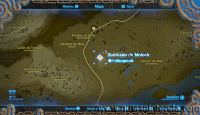
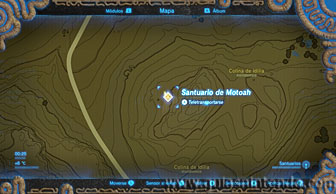
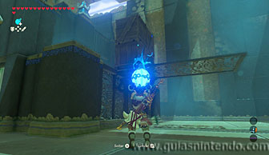
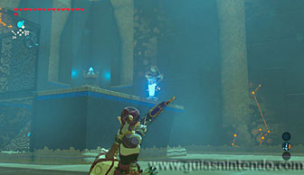
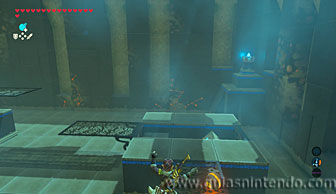
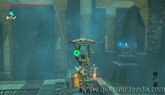
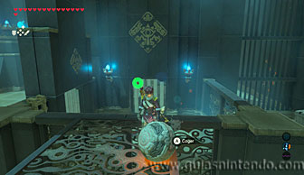
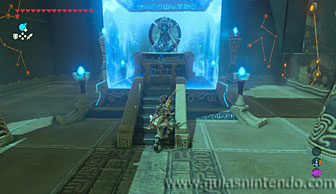

Puedes entrar en este santuario desde que llegas a la región de la torre del bosque, pero se encuentra al noreste de la torre de las colinas.

Lo primero que debes hacer es romper las cajas que están sobre la plataforma de la izquierda (según entras al santuario). Al hacerlo abrirás el camino para que la esfera pueda pasar más adelante. Después dispara al interruptor, con flechas, dos veces. Así quedará el cofre en el lugar correcto para poderlo abrir.

Ahora usa los lanzadores para llegar hasta el cofre que contiene un espada del rayo.

Después golpea de nuevo el interruptor para que gire la plataforma de nuevo. Vuelve a usar los lanzadores para llegar hasta el final, pero ahora debes llevar la esfera e ir dejándola en cada lanzador para que avance contigo. Al final del recorrido la esfera quedará sobre la plataforma donde estaban las cajas de madera al principio y podrás cogerla y lanzarla al agujero para abrir la salida.

Cuando llegues al altar del santuario examínalo para obtener un símbolo de valía.
